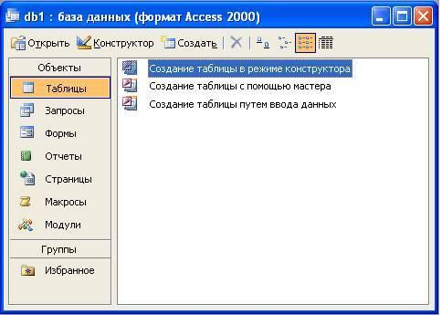
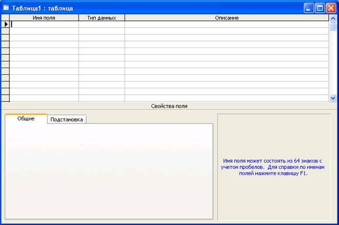
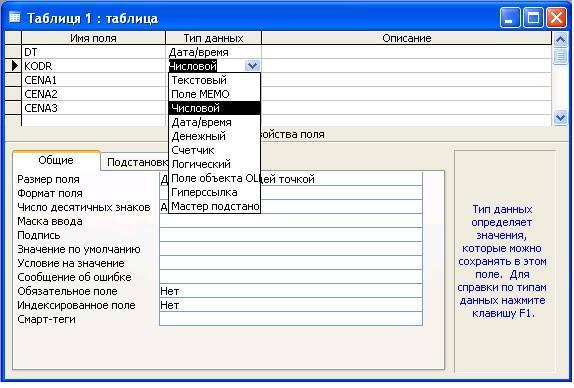

Теоретична частина
Для проектування реляційної бази даних потрібно:
- Визначити об’єкти, які містяться в базі даних.
- Визначити зв’язки між об’єктами.
- Визначити основні властивості об’єктів.
- Визначити зв’язки між властивостями об’єктів.
- Створити робочий словник даних для визначення таблиць, що входять до бази даних.
- Визначити відношення між таблицями баз даних, засновуючись на зв’язках між об’єктами даних, що містяться в таблиці, і включити цю інформацію до словника даних.
- Продумати операції, що виконуються при створенні та зміні інформації таблиць, включаючи забезпечення цілісності даних.
- Визначити, як використовувати індекси для прискорення виконання запитів, щоб уникнути сильного уповільнення роботи при додаванні даних до таблиці і надмірного збільшення об’єму дискового простору, що займається базою.
- Визначити користувачів, яким дозволений доступ до даних, їх редагування, а також зміна при необхідності структури таблиць.
- Описати структуру бази даних в цілому, завершити створення словників даних для своєї бази та для кожної таблиці, що міститься в ній, розробити процедури для операцій з базою даних, включаючи створення резервних копій і відновлення вихідних файлів.
Порядок створення таблиці
- У вікні База даних вибрати об’єкт Таблица. (Рис. 1)
- Вибрати спосіб створення таблиці. (Рис. 1)
Створення таблиці в режимі конструктора – дозволяє створити таблицю в Конструкторі таблиць.
Створення таблиці за допомогою майстра – дозволяє створити таблицю за допомогою Майстра.
Створення таблиці за допомогою вводу даних – створюється пуста таблиця в яку вносять дана та назви полів.

Рис. 1 Вибір способу створення таблиці
Створення таблиці за допомогою Майстра застосовують при побудові таблиць. Ms Access містить цілий ряд таблиць, що можна використовувати при створенні необхідних таблиць, що заощадить час.
Створення таблиці шляхом вводу даних
Вибрати режим Створення таблиці шляхом вводу даних натиснути кнопку Открыть на панелі інструментів.
На екрані з’явиться таблиця, що складається із 10 стовпців та 22 рядків. Імена полів дано за замовчуванням. Для зміни їх імені потрібно двічі клікнути на імені поля ввести нове ім’я, клікнути мишкою на вільному місці таблиці.
Ввести інформацію в таблицю, зберегти під якимось іменем.
На запити про створення ключового поля натиснути кнопку ДА.
Створення таблиці в режимі конструктора
Вибрати режим Створення таблиці в режимі конструктора натиснути кнопку Открыть.
На екрані з’явиться конструктор таблиць.(Рис. 2). В цьому вікні для визначення поля таблиці потрібно ввести:
- ім’я поля
- тип даних
- опис
- властивості поля

Рис. 2 Конструктор створення таблиць
Ім’я поля. Кожне поле в таблиці повинно мати унікальне ім’я, бажано, щоб воно було унікальним.
Тип даних. Тип даних визначає, якого виду дані допускається вводити в поле. Наприклад, неприпустиме введення тексту в поле грошового типу. Вибір відповідного типу даних забезпечує введення даних у правильній формі для сортування, обчислень і інших операцій. Microsoft Access підтримує наступні типи даних:
- Текстовий. Текст або числа, що не вимагають проведення розрахунків, наприклад, номера телефонів.
- Поле МЕМО Довгий текст або комбінація тексту і чисел.
- Числовий Числові дані, використовувані для проведення розрахунків.
- Дата/час. Дати і час, що відносяться до років з 100 по 9999, включно.
- Грошовий. Грошові значення і числові дані, використовувані в математичних розрахунках.
- Лічильник. Унікальні послідовно зростаючі (на 1) або випадкові числа, що автоматично вводяться при додаванні кожного нового запису в таблицю.
- Логічний Логічні значення, а також полючи, що можуть містити одне з двох можливих значень (True/False, Так/Немає).
- Поле об’єкта OLE. Об’єкт (наприклад, електронна таблиця Microsoft Excel, документ Microsoft Word, малюнок, звукозапис або інші дані в двоичном форматі), зв’язаний або впроваджений у таблицю Microsoft Access.
Описание. Це короткий коментар, що пояснює утримання поля.
Общие свойства поля. Задаються для кожного поля і залежать від обраного типу даних. Найважливіші властивості полів:
- Размер поля задає максимальний розмір даних, що зберігаються у полі.
- Формат поля задає формат відображення даного на екрані або друку.
- Число десятичных знаков задає для числового і грошового типів даних число знаків після коми.
- Подпись дозволяє показати на екрані заголовок стовпця поля, відмінний від дійсного імені поля.
- Условие на значение задає обмеження на значення, що вводяться, і дає змогу здійснювати контроль введення.
- Сообщение об ошибках задає текст повідомлення, виведений на екран при порушенні умови на значення.
- Индексированное поле використовується для створення простого індексу.
Приклад готової таблиці в режимі конструктора представлено на рис. 3.

Рис. 3. Конструктор створення таблиць (створена таблиця)
Введення даних до таблиці. Редагування таблиці.
Введення даних
Дані – це інформація, яку користувач заносить до таблиці для збереження.
Після відкриття таблиці введення даних до таблиці здійснюється наступним чином:
- У лівй частині першого рядка знаходиться маленький трикутник, який вказує, що в цей рядок можна вводити інформацію. Якщо перше поле є Счетчик, то кожен раз при введенні нового рядка його зміст автоматично збільшується на 1. Інформація тоді вводиться у друге поле.
- Після закінчення введення даних в останнє поле запису натиснути ENTER, у результаті чого відбудеться перехід на початок наступного запису. Якщо перше поле Счетчик то потрібно перемістити курсор на друге поле клавішею «вправо» і можна вводити інформацію.
- Всі дані що вносяться до таблиці зберігаються автоматично.
Редагування таблиці
Зміна розміру стовпця здійснюється так як і в Ms Excel.
Видалення стовпця. Виділити стовпець, клікнувши по заголовку правою кнопкою миші, в контекстному меню, що з’явиться, вибрати рядок Удалить столбец.
Додавання стовпця. Виділити стовпець перед яким потрібно додати стовпець клікнувши по заголовку правою кнопкою миші, в контекстному меню, що з’явиться, вибрати рядок Добавить столбец.